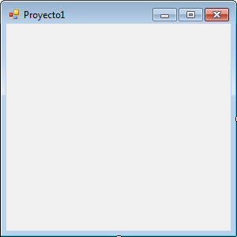

C#
Programación en lenguaje de alto nivel con C#
C# SHARP es un lenguaje de programación desarrollado por Microsoft muy apropiado para construir sistemas de información basados en red o mejor aún en internet.
Se ejecuta sobre la plataforma .NET, que es la nueva tecnología desarrollada y ofrecida por Microsoft que permite hacer más fácil la construcción y desarrollo de programas y aplicaciones.
La sintaxis de C# es muy expresiva, aunque cuenta con menos de 90 palabras clave; también es sencilla y fácil de aprender.
Es muy similar a la sintaxis de C, C++ o Java.
Como lenguaje orientado a objetos, C# admite los conceptos de encapsulación, herencia y polimorfismo.
En el desarrollo de la presente guía se presentarán los fundamentos para el desarrollo de interfaces gráficas en el entorno de programación de C#.
1. Modelo de solución
Una herramienta rápida que nos permite descomponer en partes un problema para su solución es el llamado modelo de solución, esta consiste de una pequeña caja que contiene los tres elementos más básicos en que se puede descomponer cualquier problema sencillo de información, estas tres partes son:
LA PRIMERA PARTE son todos los datos que el computador ocupa para resolver el problema, estos datos son almacenados internamente en la memoria del computador en las llamadas variables de entrada.
LA SEGUNDA PARTE son todas las operaciones generalmente algebraicas necesarias para solucionar el problema, generalmente esta parte del modelo es una ecuación algebraica o formula (o igualdad matemática, ej. x= y + 5).
LA TERCERA PARTE es el resultado o solución del problema que generalmente se obtiene de la parte de operaciones del modelo y dichos datos están almacenados en las llamadas variables de salida.
En resumen, para todo problema sencillo de información es necesario plantearse las siguientes preguntas:
¿Qué datos ocupa conocer el computador para resolver el problema y en cuales variables de entrada se van a almacenar?
¿Qué procesos u operaciones debe realizar el computador para resolver el problema planteado?
¿Qué información o variables de salida se van a desplegar en pantalla para responder al problema planteado originalmente?
Como nota importante no confundir los términos datos, variables e información:
Datos se refiere a información en bruto no procesada ni catalogada, por ejemplo “Tijuana”, “calle primera # 213”, “15 años”, “$2,520.00”, etc.
Variables es el nombre de una localidad o dirección interna en la memoria del computador donde se almacenan los datos, ejemplo de variables para los casos del inciso anterior, CIUDAD, DIRECCIÓN, EDAD, SUELDO, ETC.
Información son datos ya procesados que resuelven un problema planteado.
2 . Instalación
SharpDevelop es una distribución libre para programar sobre la plataforma .Net con el lenguaje C#.
SharpDevelop requiere .Net Framework 4.5.1
http://www.microsoft.com/en-us/download/details.aspx?id=40779
Se puede obtener el instalador de SharpDevelop en el siguiente enlace:
http://www.icsharpcode.net/opensource/sd/download/GetFile.aspx?What=Setup&Release=Zimnitz
Primer proyecto
Una vez instalado vamos a crear el primer proyecto en C#.
Al ejecutar C# debemos seleccionar el tipo de proyecto Windows Application y darle un nombre.
La ruta predeterminada donde se guardará el proyecto es la carpeta de documentos del sistema:
DocumentosàSharpDevelop Projects

Ahora vamos a la pestaña “Design” para comenzar a configurar la interfaz visual del proyecto.
Identificaremos las herramientas del entorno:

Explorador de soluciones: Permite explorar los archivos del proyecto abierto e integrar proyectos nuevos y preexistentes. Si está oculto se muestra haciendo click en el menú ViewàProjects

Cuadro de propiedades: Esta herramienta nos permite configurar las características de los controles utilizados en el proyecto. Si está oculto se muestra haciendo click en el menú ViewàProperties
|
Barra de herramientas: Aquí encontraremos los controles que es posible agregar a nuestro proyecto. Si está oculto se muestra haciendo click en el menú ViewàTools |
|
|
Controles y propiedades
 |
Cuando se crea el proyecto, éste añade un control predeterminado, que es la propia ventana (MainForm) al cual añadiremos los demás controles que requeriremos para poner en funcionamiento nuestro programa. MainForm en sí es un objeto con el cual podemos interactuar, recordemos que la interfaz visual es lo que el usuario del programa verá cuando éste se ejecuta. |
Propiedades
Son las características que identifican un objeto.
Algunas de ellas son:
En la barra de herramientas encontraremos los controles que es posible agregar a nuestro proyecto. También se pueden agregar y agrupar controles por categorías.
Por ejemplo, podemos cambiar la propiedad Backcolor de la ventana a nuestro gusto:
Algunas propiedades se usan más frecuentemente que otras.
Para cambiar el texto de una etiqueta: Text
Para cambiar el color del texto: Fore Color
Para cambiar el tipo de texto: Font
Para ocultar/mostrar un objeto: Visibility
Para deshabilitar/habilitar un control: Enabled
Nota: Las propiedades con las que se configure cada control en el diseño serán con las que inicie cuando el programa sea ejecutado.
Control Button
Este control se programa para ejecutar una o varias acciones como reacción a un evento, por ejemplo, que se haga click sobre el botón.
Control Label (Etiqueta)
Tiene como propósito mostrar información (Propiedad Text)
1.1 Button
1.2 HScrollBar
1.3 Timer
1.4 Ordenar
1.5 Area
1.6 Ganancia